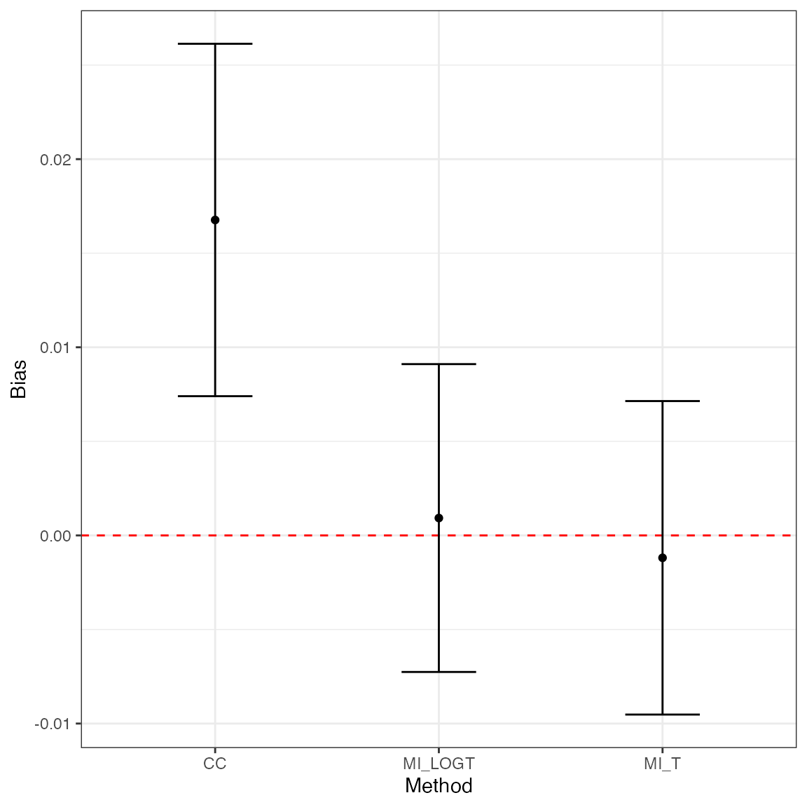
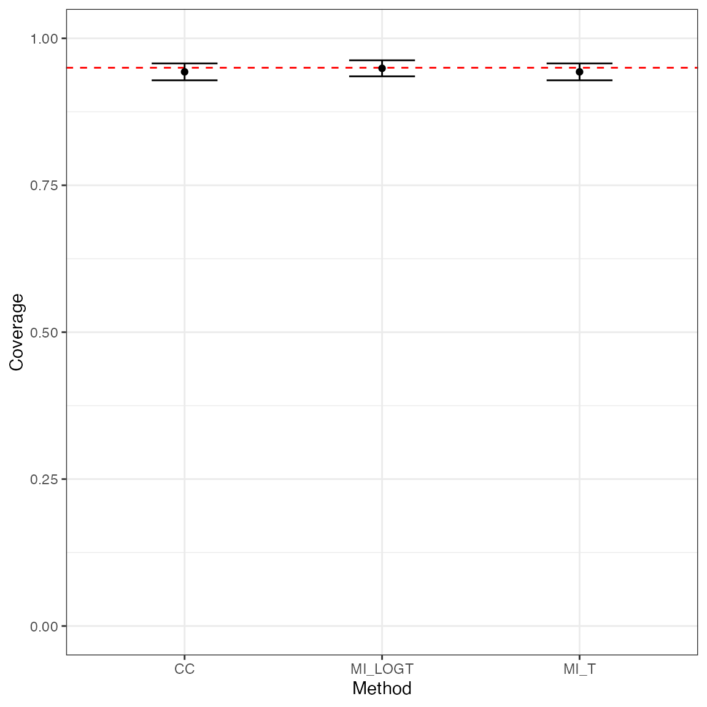
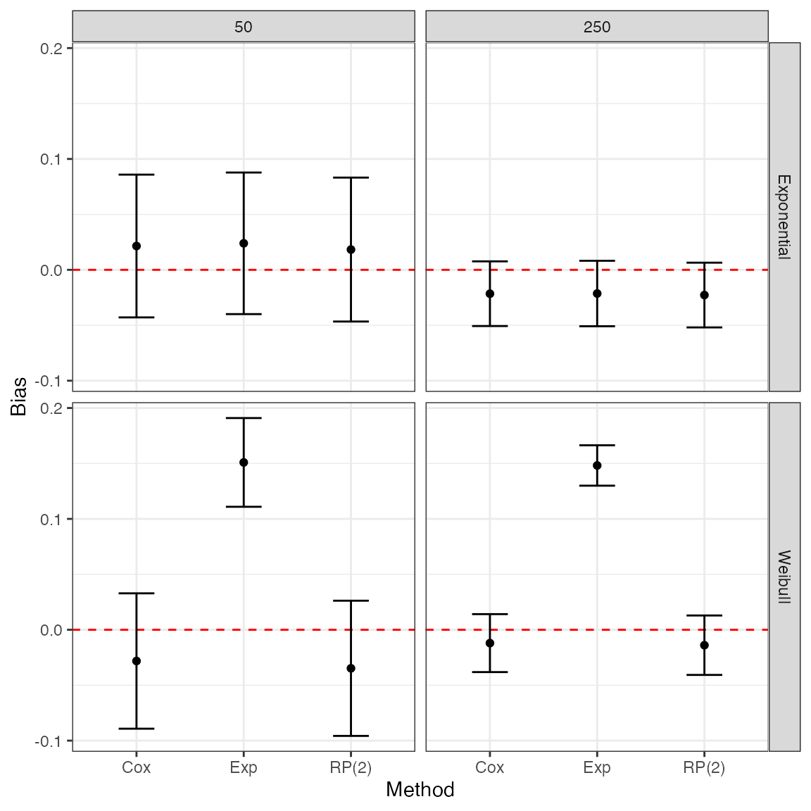

vignettes/A-introduction.Rmd
A-introduction.Rmdrsimsum is an R package that can compute summary statistics from simulation studies. It is a port to R of the user-written command simsum in Stata (White I.R., 2010).
The aim of rsimsum is helping reporting of simulation studies, including understanding the role of chance in results of simulation studies. Specifically, rsimsum can compute Monte Carlo standard errors of summary statistics, defined as the standard deviation of the estimated summary statistic.
Formula for summary statistics and Monte Carlo standard errors are presented in the next section.
We will use th following notation throughout this vignette:
The first summary statistic of interest is bias, which quantifies whether the estimator targets the true value \(\theta\) on average. Bias is calculated as:
\[\text{Bias} = \frac{1}{n_{\text{sim}}} \sum_{i = 1} ^ {n_{\text{sim}}} \hat{\theta}_i - \theta\]
The Monte Carlo standard error of bias is calculated as:
\[\text{MCSE(Bias)} = \sqrt{\frac{\frac{1}{n_{\text{sim}} - 1} \sum_{i = 1} ^ {n_{\text{sim}}} (\hat{\theta}_i - \bar{\theta}) ^ 2}{n_{\text{sim}}}}\]
The empirical standard error of \(\theta\) depends only on \(\hat{\theta}\) and does not require any knowledge of \(\theta\). It estimates the standard deviation of \(\hat{\theta}\) over the \(n_{\text{sim}}\) replications:
\[\text{Empirical SE} = \sqrt{\frac{1}{n_{\text{sim}} - 1} \sum_{i = 1} ^ {n_{\text{sim}}} (\hat{\theta}_i - \bar{\theta}) ^ 2}\]
The Monte Carlo standard error is calculated as:
\[\text{MCSE(Emp. SE)} = \frac{\widehat{\text{Emp. SE}}}{\sqrt{2 (n_{\text{sim}} - 1)}}\]
When comparing different methods, the relative precision of a given method B against a reference method A is computed as:
\[\text{Relative % increase in precision} = 100 \left[ \left( \frac{\widehat{\text{Emp. SE}}_A}{\widehat{\text{Emp. SE}}_B} \right) ^ 2 - 1 \right]\]
Its (approximated) Monte Carlo standard error is:
\[\text{MCSE(Relative % increase in precision)} \simeq 200 \left( \frac{\widehat{\text{Emp. SE}}_A}{\widehat{\text{Emp. SE}}_B} \right)^2 \sqrt{\frac{1 - \rho^2_{AB}}{n_{\text{sim}} - 1}}\]
\(\rho^2_{AB}\) is the correlation of \(\hat{\theta}_A\) and \(\hat{\theta}_B\).
A measure that takes into account both precision and accuracy of a method is the mean squared error, which is the sum of the squared bias and variance of \(\hat{\theta}\):
\[\text{MSE} = \frac{1}{n_{\text{sim}}} \sum_{i = 1} ^ {n_{\text{sim}}} (\hat{\theta}_i - \theta) ^ 2\]
The Monte Carlo standard error is:
\[\text{MCSE(MSE)} = \sqrt{\frac{\sum_{i = 1} ^ {n_{\text{sim}}} \left[ (\hat{\theta}_i - \theta) ^2 - \text{MSE} \right] ^ 2}{n_{\text{sim}} (n_{\text{sim}} - 1)}}\]
The model based standard error is computed by averaging the estimated standard errors for each replication:
\[\text{Model SE} = \sqrt{\frac{1}{n_{\text{sim}}} \sum_{i = 1} ^ {n_{\text{sim}}} \widehat{\text{Var}}(\hat{\theta}_i)}\]
Its (approximated) Monte Carlo standard error is computed as:
\[\text{MCSE(Model SE)} \simeq \sqrt{\frac{\text{Var}[\widehat{\text{Var}}(\hat{\theta}_i)]}{4 n_{\text{sim}} \widehat{\text{Model SE}}}}\]
The model standard error targets the empirical standard error. Hence, the relative error in the model standard error is an informative performance measure:
\[\text{Relative % error in model SE} = 100 \left( \frac{\text{Model SE}}{\text{Empirical SE}} - 1\right)\]
Its Monte Carlo standard error is computed as:
\[\text{MCSE(Relative % error in model SE)} = 100 \left( \frac{\text{Model SE}}{\text{Empirical SE}} \right) \sqrt{\frac{\text{Var}[\widehat{\text{Var}}(\hat{\theta}_i)]}{4 n_{\text{sim}} \widehat{\text{Model SE}} ^ 4} + \frac{1}{2(n_{\text{sim}} - 1)}}\]
Coverage is another key property of an estimator. It is defined as the probability that a confidence interval contains the true value \(\theta\), and computed as:
\[\text{Coverage} = \frac{1}{n_{\text{sim}}} \sum_{i = 1} ^ {n_{\text{sim}}} I(\hat{\theta}_{i, \text{low}} \le \theta \le \hat{\theta}_{i, \text{upp}})\]
where \(I(\cdot)\) is the indicator function. The Monte Carlo standard error is computed as:
\[\text{MCSE(Coverage)} = \sqrt{\frac{\text{Coverage} \times (1 - \text{Coverage})}{n_{\text{sim}}}}\]
Under coverage is to be expected if:
Over coverage occurs as a result of \(\text{Models SE} > \text{Empirical SE}\).
As under coverage may be a result of bias, another useful summary statistic is bias-eliminated coverage:
\[\text{Bias-eliminated coverage} = \frac{1}{n_{\text{sim}}} \sum_{i = 1} ^ {n_{\text{sim}}} I(\hat{\theta}_{i, \text{low}} \le \bar{\theta} \le \hat{\theta}_{i, \text{upp}}) \]
The Monte Carlo standard error is analogously as coverage:
\[\text{MCSE(Bias-eliminated coverage)} = \sqrt{\frac{\text{Bias-eliminated coverage} \times (1 - \text{Bias-eliminated coverage})}{n_{\text{sim}}}}\]
Finally, power of a significance test at the \(\alpha\) level is defined as:
\[\text{Power} = \frac{1}{n_{\text{sim}}} \sum_{i = 1} ^ {n_{\text{sim}}} I \left[ |\hat{\theta}_i| \ge z_{\alpha/2} * \sqrt{\widehat{\text{Var}}(\hat{\theta_i})} \right]\]
The Monte Carlo standard error is analogously as coverage:
\[\text{MCSE(Power)} = \sqrt{\frac{\text{Power} \times (1 - \text{Power})}{n_{\text{sim}}}}\]
Further information on summary statistics for simulation studies can be found in White (2010) and Morris, White, and Crowther (2019).
With this example dataset included in rsimsum we aim to summarise a simulation study comparing different ways to handle missing covariates when fitting a Cox model (White and Royston, 2009). One thousand datasets were simulated, each containing normally distributed covariates \(x\) and \(z\) and time-to-event outcome. Both covariates has \(20\%\) of their values deleted independently of all other variables so the data became missing completely at random (Little and Rubin, 2002). Each simulated dataset was analysed in three ways. A Cox model was fit to the complete cases (CC). Then two methods of multiple imputation using chained equations (van Buuren, Boshuizen, and Knook, 1999) were used. The MI_LOGT method multiply imputes the missing values of \(x\) and \(z\) with the outcome included as \(\log(t)\) and \(d\), where \(t\) is the survival time and \(d\) is the event indicator. The MI_T method is the same except that \(\log(t)\) is replaced by \(t\) in the imputation model.
We load the data in the usual way:
Let’s have a look at the first 10 rows of the dataset:
head(MIsim, n = 10)
#> # A tibble: 10 x 4
#> dataset method b se
#> <dbl> <chr> <dbl> <dbl>
#> 1 1 CC 0.707 0.147
#> 2 1 MI_T 0.684 0.126
#> 3 1 MI_LOGT 0.712 0.141
#> 4 2 CC 0.349 0.160
#> 5 2 MI_T 0.406 0.141
#> 6 2 MI_LOGT 0.429 0.136
#> 7 3 CC 0.650 0.152
#> 8 3 MI_T 0.503 0.130
#> 9 3 MI_LOGT 0.560 0.117
#> 10 4 CC 0.432 0.126The included variables are:
str(MIsim)
#> tibble [3,000 × 4] (S3: tbl_df/tbl/data.frame)
#> $ dataset: num [1:3000] 1 1 1 2 2 2 3 3 3 4 ...
#> $ method : chr [1:3000] "CC" "MI_T" "MI_LOGT" "CC" ...
#> $ b : num [1:3000] 0.707 0.684 0.712 0.349 0.406 ...
#> $ se : num [1:3000] 0.147 0.126 0.141 0.16 0.141 ...
#> - attr(*, "label")= chr "simsum example: data from a simulation study comparing 3 ways to handle missing"dataset, the number of the simulated dataset;
method, the method used (CC, MI_LOGT or MI_T);
b, the point estimate;
se, the standard error of the point estimate.
We summarise the results of the simulation study by method using the simsum function:
s1 <- simsum(data = MIsim, estvarname = "b", true = 0.50, se = "se", methodvar = "method", ref = "CC")We set true = 0.50 as the true value of the point estimate b - under which the data was simulated - is 0.50. We select CC as the reference method as we consider the complete cases analysis the reference method to benchmark against; if we do not set a reference method, simsum picks one automatically.
Using the default settings, Monte Carlo standard errors are computed and returned.
Summarising a simsum object, we obtain the following output:
ss1 <- summary(s1)
ss1
#> Values are:
#> Point Estimate (Monte Carlo Standard Error)
#>
#> Non-missing point estimates/standard errors:
#> CC MI_LOGT MI_T
#> 1000 1000 1000
#>
#> Average point estimate:
#> CC MI_LOGT MI_T
#> 0.5168 0.5009 0.4988
#>
#> Median point estimate:
#> CC MI_LOGT MI_T
#> 0.5070 0.4969 0.4939
#>
#> Average variance:
#> CC MI_LOGT MI_T
#> 0.0216 0.0182 0.0179
#>
#> Median variance:
#> CC MI_LOGT MI_T
#> 0.0211 0.0172 0.0169
#>
#> Bias in point estimate:
#> CC MI_LOGT MI_T
#> 0.0168 (0.0048) 0.0009 (0.0042) -0.0012 (0.0043)
#>
#> Empirical standard error:
#> CC MI_LOGT MI_T
#> 0.1511 (0.0034) 0.1320 (0.0030) 0.1344 (0.0030)
#>
#> % gain in precision relative to method CC:
#> CC MI_LOGT MI_T
#> 0.0000 (0.0000) 31.0463 (3.9375) 26.3682 (3.8424)
#>
#> Mean squared error:
#> CC MI_LOGT MI_T
#> 0.0231 (0.0011) 0.0174 (0.0009) 0.0181 (0.0009)
#>
#> Model-based standard error:
#> CC MI_LOGT MI_T
#> 0.1471 (0.0005) 0.1349 (0.0006) 0.1338 (0.0006)
#>
#> Relative % error in standard error:
#> CC MI_LOGT MI_T
#> -2.6594 (2.2049) 2.2233 (2.3318) -0.4412 (2.2690)
#>
#> Coverage of nominal 95% confidence interval:
#> CC MI_LOGT MI_T
#> 0.9430 (0.0073) 0.9490 (0.0070) 0.9430 (0.0073)
#>
#> Bias-eliminated coverage of nominal 95% confidence interval:
#> CC MI_LOGT MI_T
#> 0.9400 (0.0075) 0.9490 (0.0070) 0.9430 (0.0073)
#>
#> Power of 5% level test:
#> CC MI_LOGT MI_T
#> 0.9460 (0.0071) 0.9690 (0.0055) 0.9630 (0.0060)The output begins with a brief overview of the setting of the simulation study (e.g. the method variable, unique methods, etc.), and continues with each summary statistic by method (if defined, as in this case). The values that are reported are point estimates with Monte Carlo standard errors in brackets; however, it is also possible to require confidence intervals based on Monte Carlo standard errors to be reported instead:
print(ss1, mcse = FALSE)
#> Values are:
#> Point Estimate (95% Confidence Interval based on Monte Carlo Standard Errors)
#>
#> Non-missing point estimates/standard errors:
#> CC MI_LOGT MI_T
#> 1000 1000 1000
#>
#> Average point estimate:
#> CC MI_LOGT MI_T
#> 0.5168 0.5009 0.4988
#>
#> Median point estimate:
#> CC MI_LOGT MI_T
#> 0.5070 0.4969 0.4939
#>
#> Average variance:
#> CC MI_LOGT MI_T
#> 0.0216 0.0182 0.0179
#>
#> Median variance:
#> CC MI_LOGT MI_T
#> 0.0211 0.0172 0.0169
#>
#> Bias in point estimate:
#> CC MI_LOGT MI_T
#> 0.0168 (0.0074, 0.0261) 0.0009 (-0.0073, 0.0091) -0.0012 (-0.0095, 0.0071)
#>
#> Empirical standard error:
#> CC MI_LOGT MI_T
#> 0.1511 (0.1445, 0.1577) 0.1320 (0.1262, 0.1378) 0.1344 (0.1285, 0.1403)
#>
#> % gain in precision relative to method CC:
#> CC MI_LOGT MI_T
#> 0.0000 (0.0000, 0.0000) 31.0463 (23.3290, 38.7636) 26.3682 (18.8372, 33.8991)
#>
#> Mean squared error:
#> CC MI_LOGT MI_T
#> 0.0231 (0.0209, 0.0253) 0.0174 (0.0157, 0.0191) 0.0181 (0.0163, 0.0198)
#>
#> Model-based standard error:
#> CC MI_LOGT MI_T
#> 0.1471 (0.1461, 0.1481) 0.1349 (0.1338, 0.1361) 0.1338 (0.1327, 0.1350)
#>
#> Relative % error in standard error:
#> CC MI_LOGT MI_T
#> -2.6594 (-6.9810, 1.6622) 2.2233 (-2.3469, 6.7935) -0.4412 (-4.8883, 4.0059)
#>
#> Coverage of nominal 95% confidence interval:
#> CC MI_LOGT MI_T
#> 0.9430 (0.9286, 0.9574) 0.9490 (0.9354, 0.9626) 0.9430 (0.9286, 0.9574)
#>
#> Bias-eliminated coverage of nominal 95% confidence interval:
#> CC MI_LOGT MI_T
#> 0.9400 (0.9253, 0.9547) 0.9490 (0.9354, 0.9626) 0.9430 (0.9286, 0.9574)
#>
#> Power of 5% level test:
#> CC MI_LOGT MI_T
#> 0.9460 (0.9320, 0.9600) 0.9690 (0.9583, 0.9797) 0.9630 (0.9513, 0.9747)Highlighting some points of interest from the summary results above:
CC method has small-sample bias away from the null (point estimate 0.0168, with 95% confidence interval: 0.0074 - 0.0261);CC is inefficient compared with MI_LOGT and MI_T: the relative gain in precision for these two methods is 1.3105% and 1.2637% compared to CC, respectively;CC has lower power compared with MI_LOGT and MI_T, which is not surprising in view of its inefficiency.It is straightforward to produce a table of summary statistics for use in an R Markdown document:
library(knitr)
#>
#> Attaching package: 'knitr'
#> The following object is masked from 'package:rsimsum':
#>
#> kable
kable(tidy(ss1))| stat | est | mcse | method | lower | upper |
|---|---|---|---|---|---|
| nsim | 1000.0000000 | NA | CC | NA | NA |
| thetamean | 0.5167662 | NA | CC | NA | NA |
| thetamedian | 0.5069935 | NA | CC | NA | NA |
| se2mean | 0.0216373 | NA | CC | NA | NA |
| se2median | 0.0211425 | NA | CC | NA | NA |
| bias | 0.0167662 | 0.0047787 | CC | 0.0074001 | 0.0261322 |
| empse | 0.1511150 | 0.0033807 | CC | 0.1444889 | 0.1577411 |
| mse | 0.0230940 | 0.0011338 | CC | 0.0208717 | 0.0253163 |
| relprec | 0.0000000 | 0.0000000 | CC | 0.0000000 | 0.0000000 |
| modelse | 0.1470963 | 0.0005274 | CC | 0.1460626 | 0.1481300 |
| relerror | -2.6593842 | 2.2049438 | CC | -6.9809947 | 1.6622263 |
| cover | 0.9430000 | 0.0073315 | CC | 0.9286305 | 0.9573695 |
| becover | 0.9400000 | 0.0075100 | CC | 0.9252807 | 0.9547193 |
| power | 0.9460000 | 0.0071473 | CC | 0.9319915 | 0.9600085 |
| nsim | 1000.0000000 | NA | MI_LOGT | NA | NA |
| thetamean | 0.5009231 | NA | MI_LOGT | NA | NA |
| thetamedian | 0.4969223 | NA | MI_LOGT | NA | NA |
| se2mean | 0.0182091 | NA | MI_LOGT | NA | NA |
| se2median | 0.0172157 | NA | MI_LOGT | NA | NA |
| bias | 0.0009231 | 0.0041744 | MI_LOGT | -0.0072586 | 0.0091048 |
| empse | 0.1320064 | 0.0029532 | MI_LOGT | 0.1262182 | 0.1377947 |
| mse | 0.0174091 | 0.0008813 | MI_LOGT | 0.0156818 | 0.0191364 |
| relprec | 31.0463410 | 3.9374726 | MI_LOGT | 23.3290364 | 38.7636456 |
| modelse | 0.1349413 | 0.0006046 | MI_LOGT | 0.1337563 | 0.1361263 |
| relerror | 2.2232593 | 2.3317773 | MI_LOGT | -2.3469401 | 6.7934588 |
| cover | 0.9490000 | 0.0069569 | MI_LOGT | 0.9353647 | 0.9626353 |
| becover | 0.9490000 | 0.0069569 | MI_LOGT | 0.9353647 | 0.9626353 |
| power | 0.9690000 | 0.0054808 | MI_LOGT | 0.9582579 | 0.9797421 |
| nsim | 1000.0000000 | NA | MI_T | NA | NA |
| thetamean | 0.4988092 | NA | MI_T | NA | NA |
| thetamedian | 0.4939111 | NA | MI_T | NA | NA |
| se2mean | 0.0179117 | NA | MI_T | NA | NA |
| se2median | 0.0169319 | NA | MI_T | NA | NA |
| bias | -0.0011908 | 0.0042510 | MI_T | -0.0095226 | 0.0071409 |
| empse | 0.1344277 | 0.0030074 | MI_T | 0.1285333 | 0.1403221 |
| mse | 0.0180542 | 0.0009112 | MI_T | 0.0162682 | 0.0198401 |
| relprec | 26.3681613 | 3.8423791 | MI_T | 18.8372366 | 33.8990859 |
| modelse | 0.1338346 | 0.0005856 | MI_T | 0.1326867 | 0.1349824 |
| relerror | -0.4412233 | 2.2689748 | MI_T | -4.8883321 | 4.0058856 |
| cover | 0.9430000 | 0.0073315 | MI_T | 0.9286305 | 0.9573695 |
| becover | 0.9430000 | 0.0073315 | MI_T | 0.9286305 | 0.9573695 |
| power | 0.9630000 | 0.0059692 | MI_T | 0.9513006 | 0.9746994 |
Using tidy() in combination with R packages such as xtable, kableExtra, tables can yield a variety of tables that should suit most purposes.
More information on producing tables directly from R can be found in the CRAN Task View on Reproducible Research.
In this section, we show how to plot and compare summary statistics using the popular R package ggplot.
Plotting bias by method with \(95\%\) confidence intervals based on Monte Carlo standard errors:
library(ggplot2)
ggplot(tidy(ss1, stats = "bias"), aes(x = method, y = est, ymin = lower, ymax = upper)) +
geom_hline(yintercept = 0, color = "red", lty = "dashed") +
geom_point() +
geom_errorbar(width = 1 / 3) +
theme_bw() +
labs(x = "Method", y = "Bias")
Conversely, say we want to visually compare coverage for the three methods compared with this simulation study:
ggplot(tidy(ss1, stats = "cover"), aes(x = method, y = est, ymin = lower, ymax = upper)) +
geom_hline(yintercept = 0.95, color = "red", lty = "dashed") +
geom_point() +
geom_errorbar(width = 1 / 3) +
coord_cartesian(ylim = c(0, 1)) +
theme_bw() +
labs(x = "Method", y = "Coverage")
rsimsum allows to automatically drop estimates and standard errors that are larger than a predefined value. Specifically, the argument of simsum that control this behaviour is dropbig, with tuning parameters dropbig.max and dropbig.semax that can be passed via the control argument.
Set dropbig to TRUE and standardised estimates larger than max in absolute value will be dropped; standard errors larger than semax times the average standard error will be dropped too. By default, robust standardisation is used (based on median and inter-quartile range); however, it is also possible to request regular standardisation (based on mean and standard deviation) by setting the control parameter dropbig.robust = FALSE.
For instance, say we want to drop standardised estimates larger than \(3\) in absolute value and standard errors larger than \(1.5\) times the average standard error:
s1.2 <- simsum(data = MIsim, estvarname = "b", true = 0.50, se = "se", methodvar = "method", ref = "CC", dropbig = TRUE, control = list(dropbig.max = 4, dropbig.semax = 1.5))Some estimates were dropped, as we can see from the number of non-missing point estimates, standard errors:
summary(s1.2, stats = "nsim")
#> Values are:
#> Point Estimate (Monte Carlo Standard Error)
#>
#> Non-missing point estimates/standard errors:
#> CC MI_LOGT MI_T
#> 958 951 944Everything else works analogously as before; for instance, to summarise the results:
summary(s1.2)
#> Values are:
#> Point Estimate (Monte Carlo Standard Error)
#>
#> Non-missing point estimates/standard errors:
#> CC MI_LOGT MI_T
#> 958 951 944
#>
#> Average point estimate:
#> CC MI_LOGT MI_T
#> 0.5142 0.4978 0.4973
#>
#> Median point estimate:
#> CC MI_LOGT MI_T
#> 0.5065 0.4934 0.4939
#>
#> Average variance:
#> CC MI_LOGT MI_T
#> 0.0213 0.0175 0.0173
#>
#> Median variance:
#> CC MI_LOGT MI_T
#> 0.0211 0.0170 0.0167
#>
#> Bias in point estimate:
#> CC MI_LOGT MI_T
#> 0.0142 (0.0048) -0.0022 (0.0043) -0.0027 (0.0043)
#>
#> Empirical standard error:
#> CC MI_LOGT MI_T
#> 0.1493 (0.0034) 0.1320 (0.0030) 0.1323 (0.0030)
#>
#> % gain in precision relative to method CC:
#> CC MI_LOGT MI_T
#> 0.0000 (0.0000) 27.9890 (3.9442) 27.4611 (4.0317)
#>
#> Mean squared error:
#> CC MI_LOGT MI_T
#> 0.0225 (0.0011) 0.0174 (0.0009) 0.0175 (0.0009)
#>
#> Model-based standard error:
#> CC MI_LOGT MI_T
#> 0.1459 (0.0005) 0.1323 (0.0005) 0.1314 (0.0005)
#>
#> Relative % error in standard error:
#> CC MI_LOGT MI_T
#> -2.2821 (2.2539) 0.2271 (2.3285) -0.6949 (2.3122)
#>
#> Coverage of nominal 95% confidence interval:
#> CC MI_LOGT MI_T
#> 0.9447 (0.0074) 0.9464 (0.0073) 0.9417 (0.0076)
#>
#> Bias-eliminated coverage of nominal 95% confidence interval:
#> CC MI_LOGT MI_T
#> 0.9426 (0.0075) 0.9453 (0.0074) 0.9439 (0.0075)
#>
#> Power of 5% level test:
#> CC MI_LOGT MI_T
#> 0.9457 (0.0073) 0.9685 (0.0057) 0.9661 (0.0059)
data("relhaz", package = "rsimsum")Let’s have a look at the first 10 rows of the dataset:
head(relhaz, n = 10)
#> dataset n baseline theta se model
#> 1 1 50 Exponential -0.88006151 0.3330172 Cox
#> 2 2 50 Exponential -0.81460242 0.3253010 Cox
#> 3 3 50 Exponential -0.14262887 0.3050516 Cox
#> 4 4 50 Exponential -0.33251820 0.3144033 Cox
#> 5 5 50 Exponential -0.48269940 0.3064726 Cox
#> 6 6 50 Exponential -0.03160756 0.3097203 Cox
#> 7 7 50 Exponential -0.23578090 0.3121350 Cox
#> 8 8 50 Exponential -0.05046332 0.3136058 Cox
#> 9 9 50 Exponential -0.22378715 0.3066037 Cox
#> 10 10 50 Exponential -0.45326446 0.3330173 CoxThe included variables are:
str(relhaz)
#> 'data.frame': 1200 obs. of 6 variables:
#> $ dataset : int 1 2 3 4 5 6 7 8 9 10 ...
#> $ n : num 50 50 50 50 50 50 50 50 50 50 ...
#> $ baseline: chr "Exponential" "Exponential" "Exponential" "Exponential" ...
#> $ theta : num -0.88 -0.815 -0.143 -0.333 -0.483 ...
#> $ se : num 0.333 0.325 0.305 0.314 0.306 ...
#> $ model : chr "Cox" "Cox" "Cox" "Cox" ...dataset, simulated dataset number;
n, sample size of the simulate dataset;
baseline, baseline hazard function of the simulated dataset;
model, method used (Cox model or Royston-Parmar model with 2 degrees of freedom);
theta, point estimate for the log-hazard ratio;
se, standard error of the point estimate.
rsimsum can summarise results from simulation studies with several data-generating mechanisms. For instance, with this example we show how to compute summary statistics by baseline hazard function and sample size.
In order to summarise results by data-generating factors, it is sufficient to define the “by” factors in the call to simsum:
s2 <- simsum(data = relhaz, estvarname = "theta", true = -0.50, se = "se", methodvar = "model", by = c("baseline", "n"))
#> 'ref' method was not specified, Cox set as the reference
s2
#> Summary of a simulation study with a single estimand.
#> True value of the estimand: -0.5
#>
#> Method variable: model
#> Unique methods: Cox, Exp, RP(2)
#> Reference method: Cox
#>
#> By factors: baseline, n
#>
#> Monte Carlo standard errors were computed.The difference between methodvar and by is as follows: methodvar represents methods (e.g. the two models, in this example) compared with this simulation study, while by represents all possible data-generating factors that varied when simulating data (in this case, sample size and the true baseline hazard function).
Summarising the results will be printed out for each method and combination of data-generating factors:
ss2 <- summary(s2)
ss2
#> Values are:
#> Point Estimate (Monte Carlo Standard Error)
#>
#> Non-missing point estimates/standard errors:
#> baseline n Cox Exp RP(2)
#> Exponential 50 100 100 100
#> Exponential 250 100 100 100
#> Weibull 50 100 100 100
#> Weibull 250 100 100 100
#>
#> Average point estimate:
#> baseline n Cox Exp RP(2)
#> Exponential 50 -0.4785 -0.4761 -0.4817
#> Exponential 250 -0.5215 -0.5214 -0.5227
#> Weibull 50 -0.5282 -0.3491 -0.5348
#> Weibull 250 -0.5120 -0.3518 -0.5139
#>
#> Median point estimate:
#> baseline n Cox Exp RP(2)
#> Exponential 50 -0.4507 -0.4571 -0.4574
#> Exponential 250 -0.5184 -0.5165 -0.5209
#> Weibull 50 -0.5518 -0.3615 -0.5425
#> Weibull 250 -0.5145 -0.3633 -0.5078
#>
#> Average variance:
#> baseline n Cox Exp RP(2)
#> Exponential 50 0.1014 0.0978 0.1002
#> Exponential 250 0.0195 0.0191 0.0194
#> Weibull 50 0.0931 0.0834 0.0898
#> Weibull 250 0.0174 0.0164 0.0172
#>
#> Median variance:
#> baseline n Cox Exp RP(2)
#> Exponential 50 0.1000 0.0972 0.0989
#> Exponential 250 0.0195 0.0190 0.0194
#> Weibull 50 0.0914 0.0825 0.0875
#> Weibull 250 0.0174 0.0164 0.0171
#>
#> Bias in point estimate:
#> baseline n Cox Exp RP(2)
#> Exponential 50 0.0215 (0.0328) 0.0239 (0.0326) 0.0183 (0.0331)
#> Exponential 250 -0.0215 (0.0149) -0.0214 (0.0151) -0.0227 (0.0149)
#> Weibull 50 -0.0282 (0.0311) 0.1509 (0.0204) -0.0348 (0.0311)
#> Weibull 250 -0.0120 (0.0133) 0.1482 (0.0093) -0.0139 (0.0137)
#>
#> Empirical standard error:
#> baseline n Cox Exp RP(2)
#> Exponential 50 0.3285 (0.0233) 0.3258 (0.0232) 0.3312 (0.0235)
#> Exponential 250 0.1488 (0.0106) 0.1506 (0.0107) 0.1489 (0.0106)
#> Weibull 50 0.3115 (0.0221) 0.2041 (0.0145) 0.3111 (0.0221)
#> Weibull 250 0.1333 (0.0095) 0.0929 (0.0066) 0.1368 (0.0097)
#>
#> % gain in precision relative to method Cox:
#> baseline n Cox Exp RP(2)
#> Exponential 50 -0.0000 (0.0000) 1.6773 (3.2902) -1.6228 (1.7887)
#> Exponential 250 0.0000 (0.0000) -2.3839 (3.0501) -0.1491 (0.9916)
#> Weibull 50 -0.0000 (0.0000) 132.7958 (16.4433) 0.2412 (3.7361)
#> Weibull 250 -0.0000 (0.0000) 105.8426 (12.4932) -4.9519 (2.0647)
#>
#> Mean squared error:
#> baseline n Cox Exp RP(2)
#> Exponential 50 0.1073 (0.0149) 0.1056 (0.0146) 0.1089 (0.0154)
#> Exponential 250 0.0224 (0.0028) 0.0229 (0.0028) 0.0225 (0.0028)
#> Weibull 50 0.0968 (0.0117) 0.0640 (0.0083) 0.0970 (0.0117)
#> Weibull 250 0.0177 (0.0027) 0.0305 (0.0033) 0.0187 (0.0028)
#>
#> Model-based standard error:
#> baseline n Cox Exp RP(2)
#> Exponential 50 0.3185 (0.0013) 0.3127 (0.0010) 0.3165 (0.0012)
#> Exponential 250 0.1396 (0.0002) 0.1381 (0.0002) 0.1394 (0.0002)
#> Weibull 50 0.3052 (0.0014) 0.2888 (0.0005) 0.2996 (0.0012)
#> Weibull 250 0.1320 (0.0002) 0.1281 (0.0001) 0.1313 (0.0002)
#>
#> Relative % error in standard error:
#> baseline n Cox Exp RP(2)
#> Exponential 50 -3.0493 (6.8838) -4.0156 (6.8114) -4.4305 (6.7842)
#> Exponential 250 -6.2002 (6.6512) -8.3339 (6.4996) -6.4133 (6.6361)
#> Weibull 50 -2.0115 (6.9601) 41.4993 (10.0341) -3.6873 (6.8377)
#> Weibull 250 -0.9728 (7.0220) 37.7762 (9.7671) -4.0191 (6.8057)
#>
#> Coverage of nominal 95% confidence interval:
#> baseline n Cox Exp RP(2)
#> Exponential 50 0.9500 (0.0218) 0.9400 (0.0237) 0.9500 (0.0218)
#> Exponential 250 0.9300 (0.0255) 0.9200 (0.0271) 0.9300 (0.0255)
#> Weibull 50 0.9700 (0.0171) 0.9900 (0.0099) 0.9500 (0.0218)
#> Weibull 250 0.9400 (0.0237) 0.8500 (0.0357) 0.9400 (0.0237)
#>
#> Bias-eliminated coverage of nominal 95% confidence interval:
#> baseline n Cox Exp RP(2)
#> Exponential 50 0.9500 (0.0218) 0.9500 (0.0218) 0.9500 (0.0218)
#> Exponential 250 0.9400 (0.0237) 0.9400 (0.0237) 0.9400 (0.0237)
#> Weibull 50 0.9500 (0.0218) 1.0000 (0.0000) 0.9500 (0.0218)
#> Weibull 250 0.9500 (0.0218) 0.9900 (0.0099) 0.9400 (0.0237)
#>
#> Power of 5% level test:
#> baseline n Cox Exp RP(2)
#> Exponential 50 0.3600 (0.0480) 0.3800 (0.0485) 0.3700 (0.0483)
#> Exponential 250 0.9800 (0.0140) 0.9900 (0.0099) 0.9900 (0.0099)
#> Weibull 50 0.4300 (0.0495) 0.0900 (0.0286) 0.4700 (0.0499)
#> Weibull 250 0.9700 (0.0171) 0.8600 (0.0347) 0.9700 (0.0171)Tables could get cumbersome when there are many different data-generating mechanisms. Plots are generally easier to interpret, and can be generated as easily as before.
Say we want to compare bias for each method by baseline hazard function and sample size using faceting:
ggplot(tidy(ss2, stats = "bias"), aes(x = model, y = est, ymin = lower, ymax = upper)) +
geom_hline(yintercept = 0, color = "red", lty = "dashed") +
geom_point() +
geom_errorbar(width = 1 / 3) +
facet_grid(baseline ~ n) +
theme_bw() +
labs(x = "Method", y = "Bias")